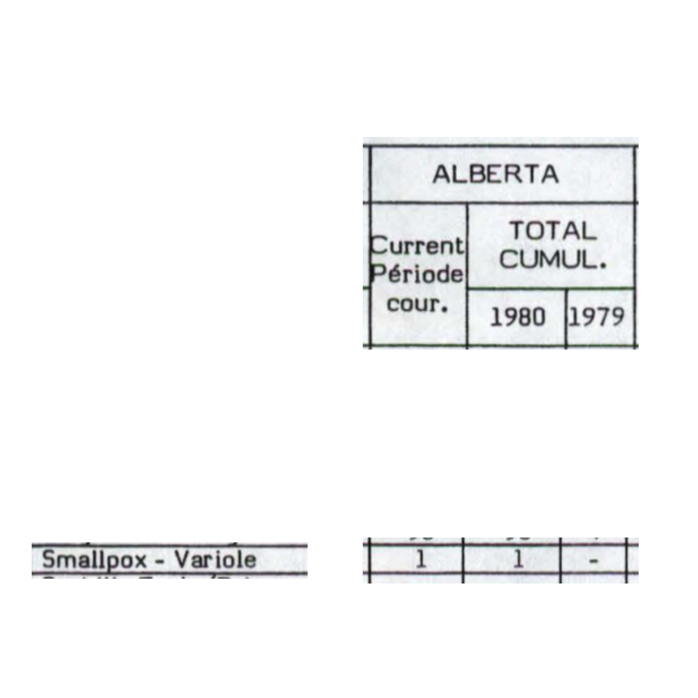

In this vignette we illustrate how to investigate the provenance of a particular record in the a dataset obtained from the API. We use an example of a surprisingly late smallpox record in the CANDID data.

(Image From: https://phil.cdc.gov/details.aspx?pid=1849)
Preliminaries
We use the following packages for this illustration.
We require a hook for the API, which in this case is
iidda.api::ops_staging. This hook will eventually be
changed to iidda.api::ops once we stabilize. In fact if you
do not have access to the iidda-staging
repository you will need to wait until we stabilize.
api_hook = iidda.api::ops_stagingFor convenience we define a custom print function and
turn off messages from the API that are not helpful when presenting the
material.
print_single_row = function(data) {
(data
|> t()
|> as.data.frame()
|> setNames("Value")
)
}
options(iidda_api_msgs = FALSE)Example: The Last Case of Smallpox
Smallpox has been eliminated from Canada in 1946 https://www.cmaj.ca/content/161/12/1543. Then why does IIDDA have a case in Alberta in 1980?
smallpox = api_hook$filter(resource_type = "Compilation"
, dataset_ids = "canmod-cdi-normalized"
, basal_disease = "smallpox"
)
latest_smallpox = (smallpox
|> filter(cases_this_period > 0)
|> filter(max(period_start_date) == period_start_date)
)
(latest_smallpox
|> select(
, iso_3166_2
, period_start_date
, period_end_date
, cases_this_period
)
|> print_single_row()
)
#> Value
#> iso_3166_2 CA-AB
#> period_start_date 1979-12-30
#> period_end_date 1980-01-26
#> cases_this_period 1That’s got to be wrong, right?
This is one of the many instances where one will want to go back to the source documents to check whether surprising data represent errors in the data curation process.
The CANMOD data have columns containing provenance information. These columns give identifiers for resources used to produce each record. For our smallpox case we have the following provenance.
provenance = (latest_smallpox
|> distinct(
original_dataset_id
, digitization_id
, scan_id
)
)
print_single_row(provenance)
#> Value
#> original_dataset_id cdi_ca_1979-83_4wk_prov_statcan
#> digitization_id cdi_ca_1979-83_4wk_prov_statcan
#> scan_id cdi_ca_1979-83_4wk_prov_statcanHere we see identifiers for the original dataset that was included in the compiled dataset, for the digitization (which is an Excel file containing manually entered data), and for the PDF scan of the original source document. These identifiers are of no use unless we can use them to find these resources. Here we show how.
Let’s start with the scan to see if the original source actually
published this very late smallpox case. We use the
?url_scans function to convert this identifier into an URL
at which we can find the document.
url_scans(provenance$scan_id)
#> [1] "https://github.com/davidearn/iidda/blob/main/pipelines/cdi_ca_1979-89_4wk_prov/scans/cdi_ca_1979-83_4wk_prov_statcan.pdf"It takes some time to find the specific part of this document that contains our datum. It is actually a little more difficult than usual in this case, because the document has spread the columns of a single table across two pages. We simplify here by cutting and pasting the relevant parts of the table together, and indeed we do find a single case of smallpox in Albert in January of 1980.

So in this case it looks like an error that was made before this
source document was published, but in some cases we need to look further
to see if we introduced the error in our curation process. The next
place to look would usually be the digitized Excel file, which we can
get using the ?url_digitizations function.
url_digitizations(provenance$digitization_id)
#> [1] "https://github.com/davidearn/iidda/blob/main/pipelines/cdi_ca_1979-89_4wk_prov/digitizations/cdi_ca_1979-83_4wk_prov_statcan.xlsx"We can also find all of the prep-scripts that would potentially have
their output modified if we updated this digitization using the
?url_affected_scripts function.
url_affected_scripts(provenance$digitization_id)
#> [1] "https://github.com/davidearn/iidda/blob/main/pipelines/cdi_ca_1979-89_4wk_prov_harmonized/prep-scripts/cdi_ca_1979-89_4wk_prov_harmonized.R"
#> [2] "https://github.com/davidearn/iidda/blob/main/pipelines/canmod-compilations/prep-scripts/canmod-cdi-normalized.R"
#> [3] "https://github.com/davidearn/iidda/blob/main/pipelines/cdi_ca_1979-89_4wk_prov/prep-scripts/cdi_ca_1979-83_4wk_province_statisticscanada.R"
#> [4] "https://github.com/davidearn/iidda/blob/main/pipelines/canmod-cross-checks/prep-scripts/canmod-time-scale-cross-check.R"
#> [5] "https://github.com/davidearn/iidda/blob/main/pipelines/canmod-compilations/prep-scripts/canmod-cdi-unharmonized.R"
#> [6] "https://github.com/davidearn/iidda/blob/main/pipelines/canmod-cross-checks/prep-scripts/canmod-location-cross-check.R"
#> [7] "https://github.com/davidearn/iidda/blob/main/pipelines/canmod-cross-checks/prep-scripts/canmod-disease-cross-check.R"
#> [8] "https://github.com/davidearn/iidda/blob/main/pipelines/canmod-compilations/prep-scripts/canmod-cdi-harmonized.R"Finally, note that these url_* functions are nicely
paired with the base R ?browseURL function.